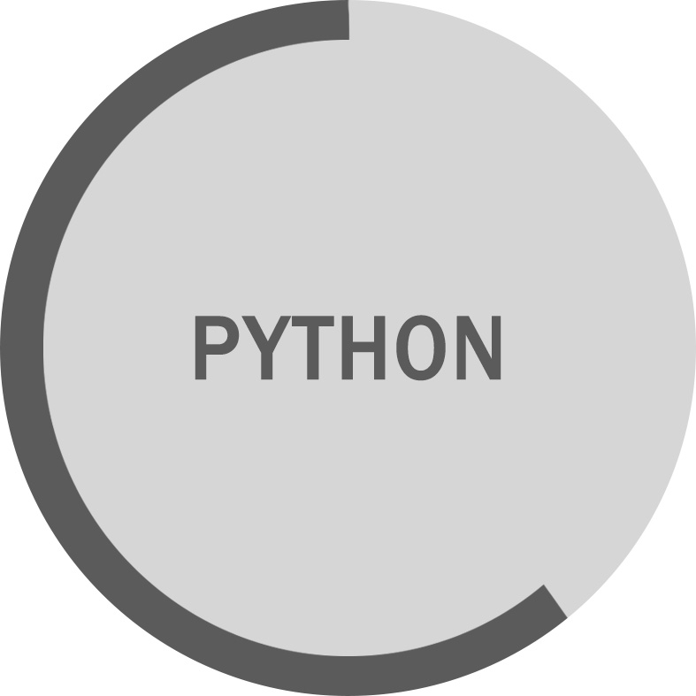
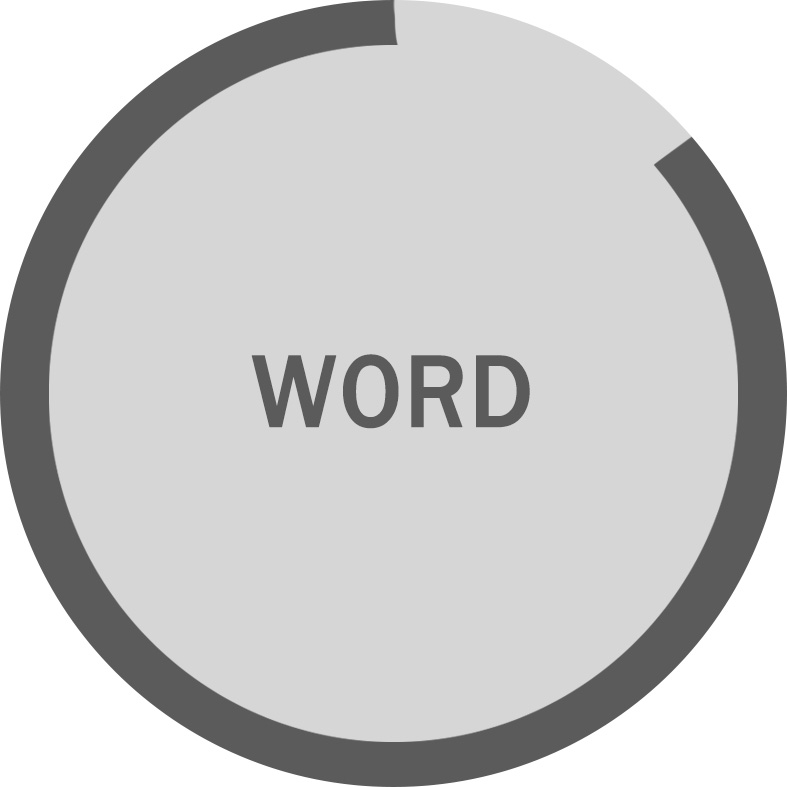
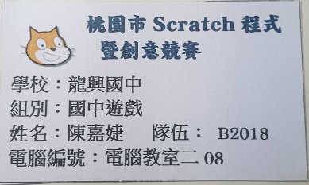
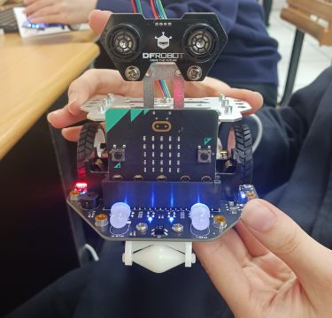
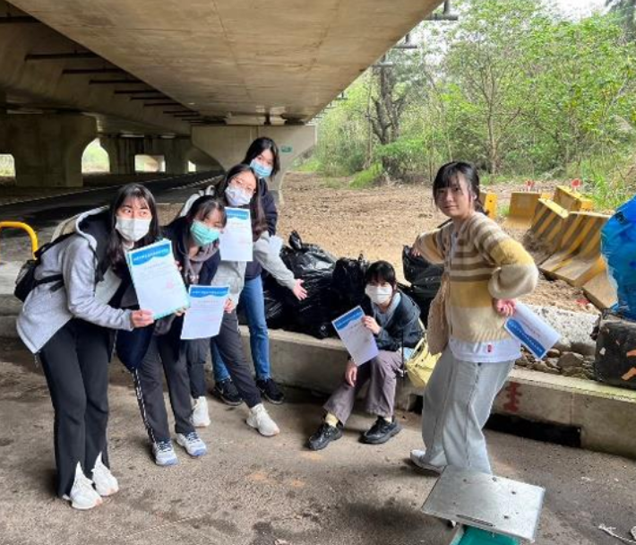

ABOUT
SKILL
EXPERIENCE
ABOUT
姓名: 陳嘉婕
信箱: jc11093241217@gmail.com
生日: 2004/12/17
興趣: 聽音樂 看小說
特質: 樂觀
SKILL


EXPERIENCE

在國小時，因為成長環境因素，我比同齡的人們更會操控電腦，也因為這點被歷屆的老師邀請
去參加校內電腦相關的小型競賽，最後也都獲得了不錯的成績，升上國中時我因為國小有豐富
的相關經驗，也是這三年學校比賽的常客，也完成了我人生中第二個畢業紀念冊的製作，老師
得知我對這方面較為精通之後，派我去參加了校外的簡報設計及程式設計等等競賽，也因為這
樣累積了不少新的經驗。
高三時的業師課我接觸到了EV3和Micro Bit兩款機器人，都是透過程式設計後控制組裝好的機器人車體動作，認識
到了怎麼設計聲音感測器和超音波感應器工作，讓機器人接受到訊息時做出對應的反饋，除了可以靠自己的想像力
設計各種不同情況之外，也很好得訓練了邏輯思維的能力，需要了解在什麼狀況下可以做哪些指令，這是個很需要
細心與耐心的環節，如果有任何一個微小的地方錯誤，可能都會導致整個系統無法運作。


大一時的管理學課程，我們藉由老師指定的主題跟小組一起參與了淨灘活動，其實一開始本來覺得是個蠻簡單的任務
直到真的到了現場後發現需要非常多的專注力和體力，沙灘上的路非常不平整，很多長青苔的石頭和流動的沙子，每
走一步都需要非常小心，結束過後我們也透過歷年來的數據研究了這樣的淨灘活動是否真的對減少海洋汙染有所幫助
是一個讓我印象很深刻同時也學到很多新的事物的經驗。